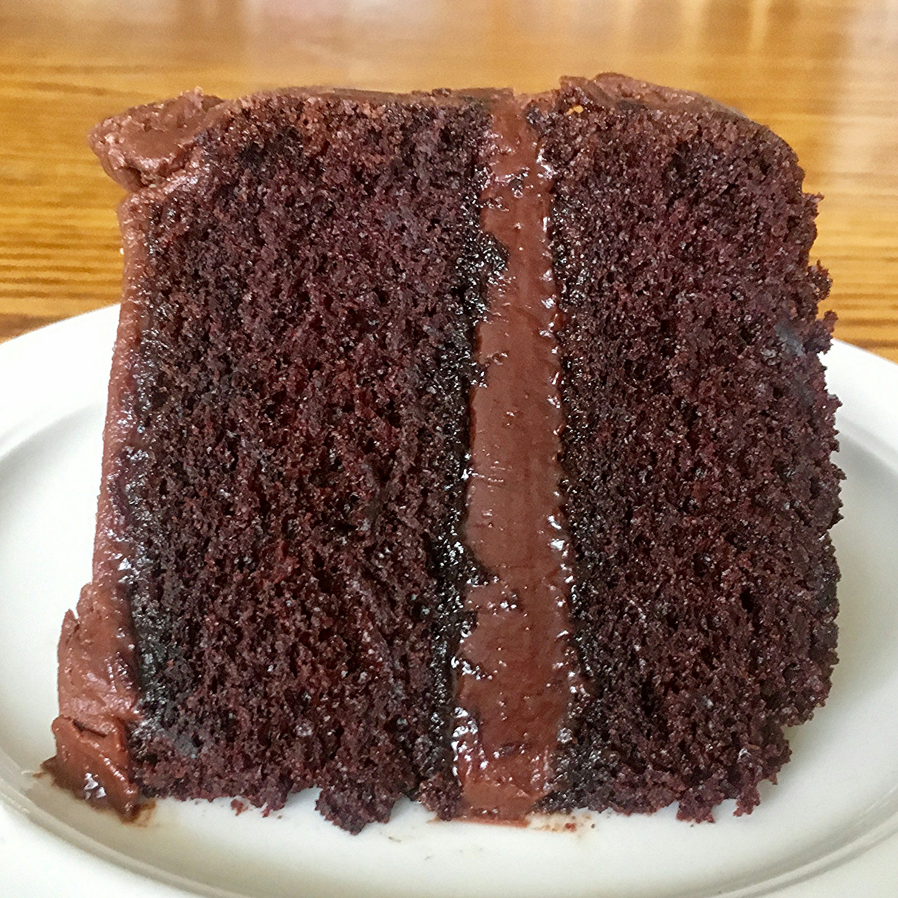

Best Chocolate Cake

Best enjoyed with a glass of milk, this cake recipe is a treat on any occasion. A rich, chocolately experience will change your definition of what a good cake is!
Ingredients
- 1/2 cup butter
- 1/2 cup shortening
- 1 cup water
- 1/4 cup unsweetened cocoa powder
- 2 cups all-purpose flour
- 2 cups white sugar
- 1/2 cup milk
- 1 tbsp distilled white vinegar
- 2 eggs
- 1 tsp baking soda
- 1 tsp vanilla extract
- 6 tbsp butter
- 4 tbsp milk
- 3 tbsp unsweetened cocoa powder
- 1 tsp vanilla extract
Directions
- Bring to a boil the 1/2 cup butter or margarine, 1/2 cup shortening, water and 1/4 cup cocoa. Remove from heat and add flour, sugar, 1/2 cup milk and vinegar. Mix well. Then add: eggs, baking soda and 1 teaspoon vanilla.
- Mix well until lumps are gone. Pour into greased 9 x 13 inch pan. Bake at 400 degrees F (205 degrees C) for 20 minutes or until toothpick comes out clean.
- To Make Fudge Frosting: Combine in saucepan , 6 tablespoon butter or oleo, 4 tablespoons milk and cocoa. Bring to rolling boil. Remove from heat and add 3 cups confectioners' sugar and 1 teaspoon vanilla. Beat until smooth. Spread on cooled cake.
Links
Go to original recipe
Go back to main page